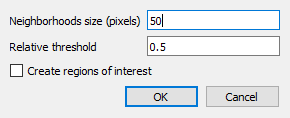
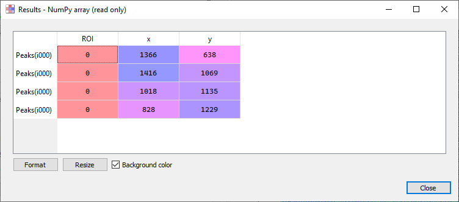
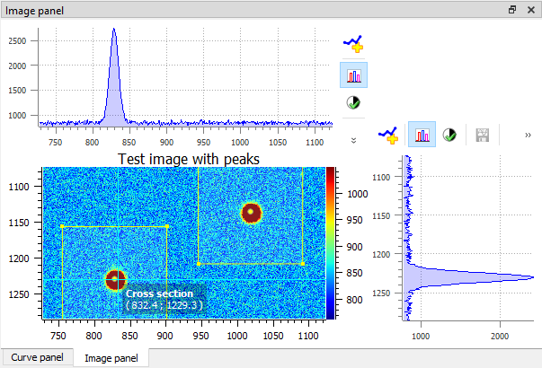

Détection de pics 2D#
DataLab fournit une fonctionnalté de « Détection de pics 2D » qui est basée sur un algorithme de filtrage minimum-maximum.

Paramètres de détection de pics 2D.#
- La fonctionnalité s’utilise de la façon suivante :
Créer ou ouvrir une image dans l’espace de travail de DataLab
Sélectionner « Détection de pics 2D » dans le menu Analyse »
Saisir les paramètres « Taille de voisinage » et « Seuil relatif »
Optionnellement, activer « Créer des régions d’intérêt » pour créer automatiquement des ROIs autour de chaque pic détecté :
Choisir la géométrie de la ROI : « Rectangle » ou « Cercle »
La taille de la ROI est automatiquement calculée en fonction de la distance minimale entre les pics détectés (pour éviter le chevauchement)
Cette fonctionnalité nécessite au moins 2 pics détectés
Les ROIs créées peuvent être utiles pour le traitement ultérieur de chaque zone de pic (par exemple, détection de contours, mesures, etc.)

Résultats d’une détection de pics 2D (voir le test « peak2d_app.py »)#
- Les résultats sont affichés dans un tableau :
Chaque ligne est associée à un pic détecté
La première colonne contient l’indice de la ROI (0 si aucune ROI n’est définie)
Les deuxième et troisième colonnes contiennent les coordonnées des pics

Exemple de détection de pics 2D.#
- L’algorithme de détection de pics 2D fonctionne de la manière suivante :
Tout d’abord, des images filtrées minimum-maximum sont calculées en utilisant un algorithme de fenêtre glissante dont la taille est définie par l’utilisateur (implémentation basée sur scipy.ndimage.minimum_filter et scipy.ndimage.maximum_filter)
Ensuite, la différence entre ces deux images filtrées est ecrêtée à une valeur correspondant à un seuil défini par l’utilisateur
L’image résultante est étiquetée en utilisant scipy.ndimage.label
Les coordonnées des pics sont ensuites obtenues en calculant le centre de chaque étiquette
Les doublons sont éventuellement supprimés
- Les paramètrees de la détection de pics 2D sont les suivants :
« Taille de voisinage »: taille de la fenêtre glissante (cf. plus haut)
« Seuil relatif »: seuil de détection
« Créer des régions d’intérêt »: si activé, crée automatiquement des ROIs autour de chaque pic détecté (nécessite au moins 2 pics)
« Géométrie de la ROI »: forme des ROIs (« Rectangle » ou « Cercle »)
La fonctionnalité est basée sur la fonction get_2d_peaks_coords du module sigima.tools :
@check_2d_array(non_constant=True) def get_2d_peaks_coords( data: np.ndarray, size: int | None = None, level: float = 0.5 ) -> np.ndarray: """Detect peaks in image data, return coordinates. If neighborhoods size is None, default value is the highest value between 50 pixels and the 1/40th of the smallest image dimension. Detection threshold level is relative to difference between data maximum and minimum values. Args: data: Input data size: Neighborhood size (default: None) level: Relative level (default: 0.5) Returns: Coordinates of peaks """ if size is None: size = max(min(data.shape) // 40, 50) data_max = spi.maximum_filter(data, size) data_min = spi.minimum_filter(data, size) data_diff = data_max - data_min diff = (data_max - data_min) > get_absolute_level(data_diff, level) maxima = data == data_max maxima[diff == 0] = 0 labeled, _num_objects = spi.label(maxima) slices = spi.find_objects(labeled) coords = [] for dy, dx in slices: x_center = int(0.5 * (dx.start + dx.stop - 1)) y_center = int(0.5 * (dy.start + dy.stop - 1)) coords.append((x_center, y_center)) if len(coords) > 1: # Eventually removing duplicates dist = distance_matrix(coords) for index in reversed(np.unique(np.where((dist < size) & (dist > 0))[1])): coords.pop(index) return np.array(coords)